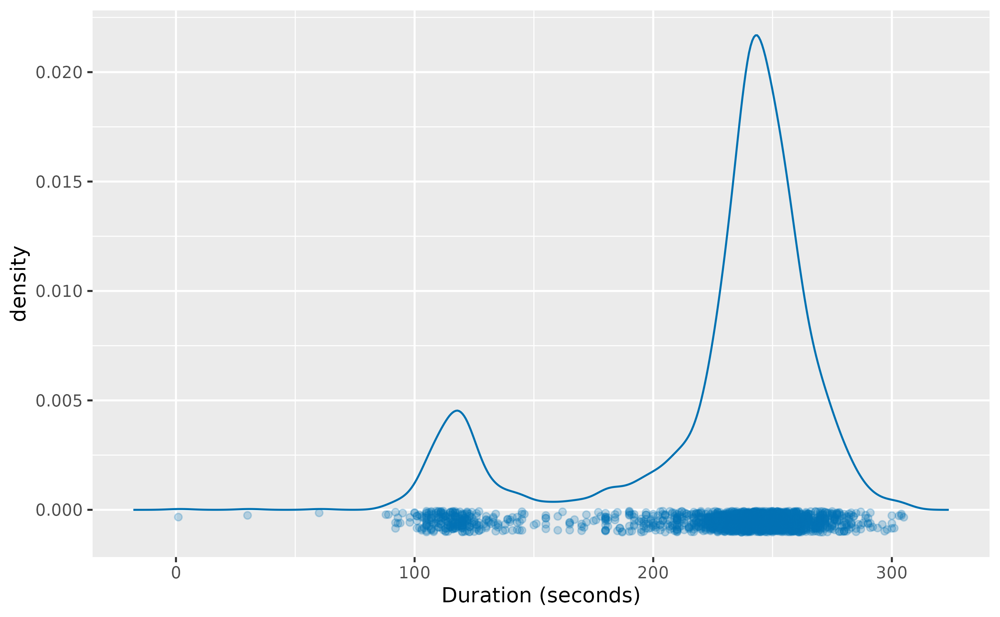
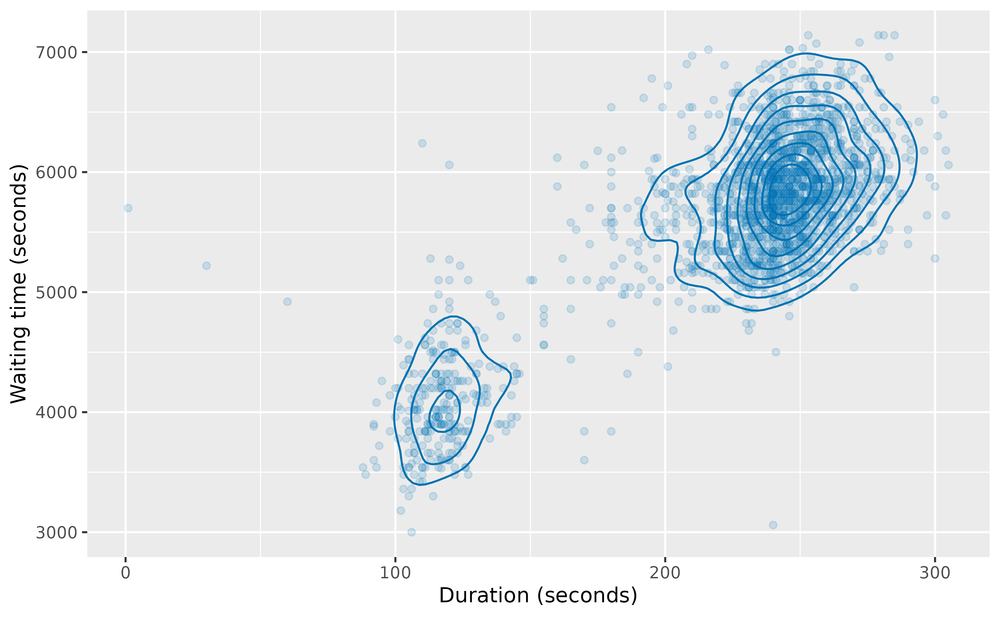
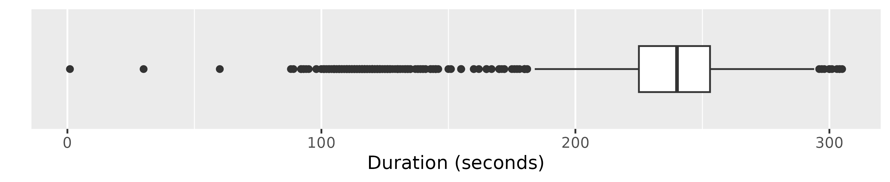
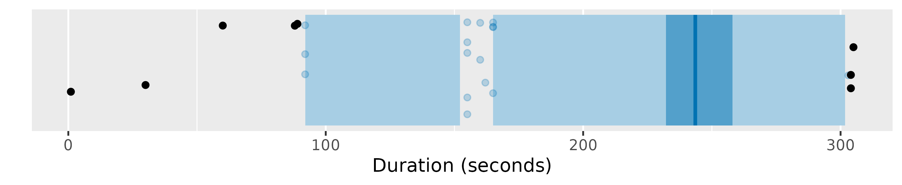
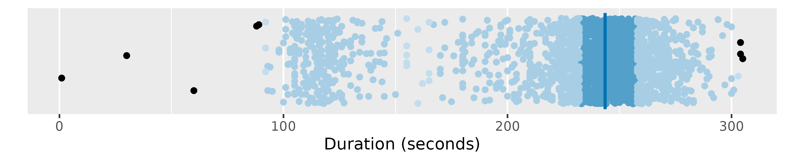
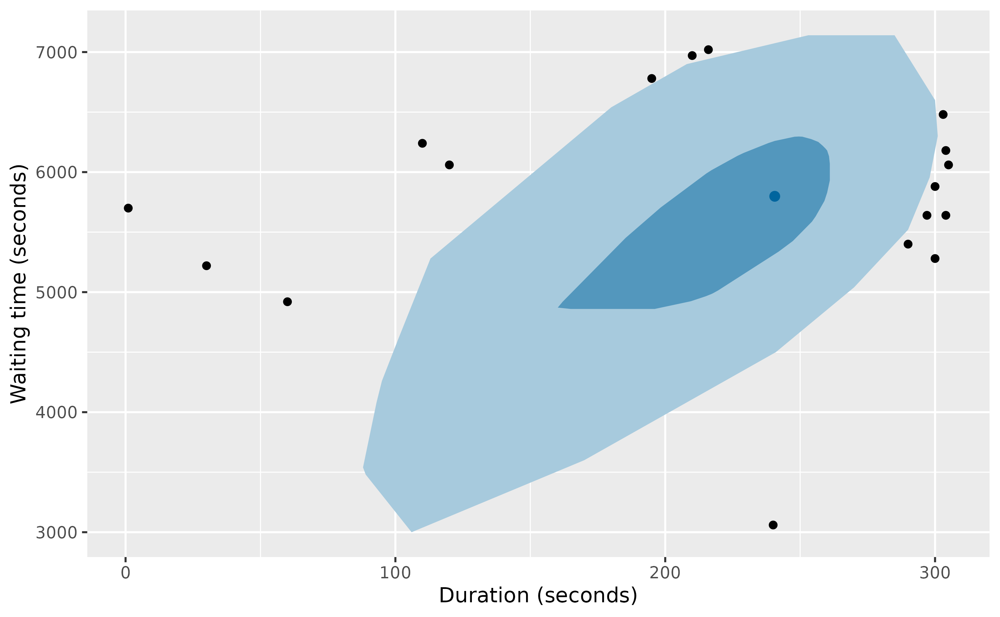
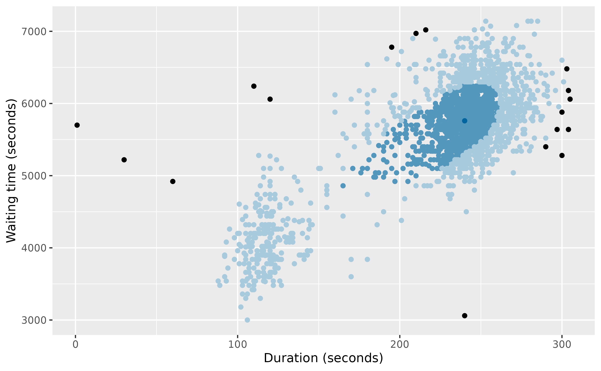
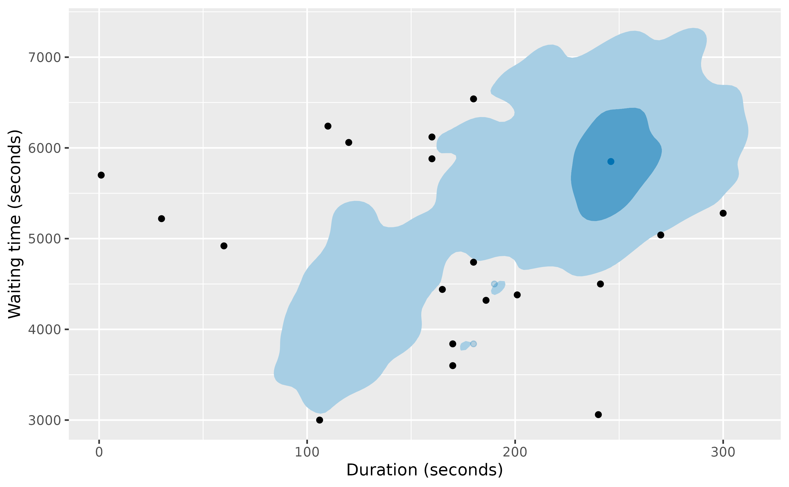
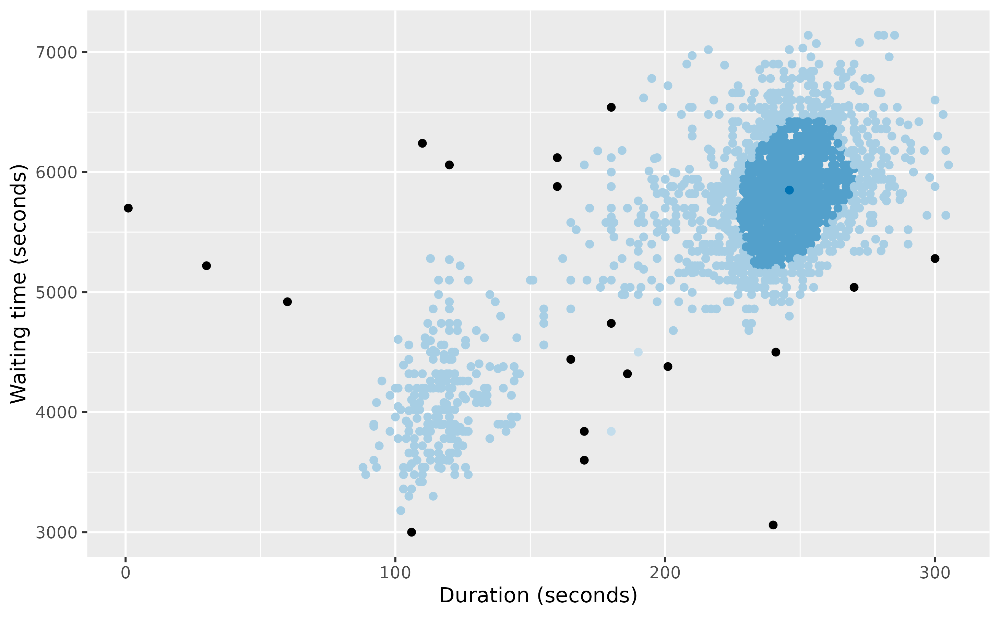

library(weird)
#> Warning: no DISPLAY variable so Tk is not available
#> ── Attaching core weird packages ───────────────────────────────────── weird 3.0.0 ──
#> ✔ distributional 0.8.1 ✔ ggplot2 4.0.3
#> ✔ dplyr 1.2.1
#> ── Conflicts ───────────────────────────────────────────────────── weird_conflicts ──
#> ✖ dplyr::filter() masks stats::filter()
#> ✖ dplyr::lag() masks stats::lag()The oldfaithful data set contains eruption data from the
Old Faithful Geyser in Yellowstone National Park, Wyoming, USA, from
2017 to 2023. The data were obtained from the geysertimes.org website. Recordings
are incomplete, especially during the winter months when observers may
not be present. There also appear to be some recording errors. The data
set contains 2097 observations of 3 variables: time giving
the time at which each eruption began, recorded_duration
giving the length of the eruption as recorded, duration
giving the length of the eruption in seconds, and waiting
giving the time to the next eruption in seconds.
oldfaithful
#> # A tibble: 2,097 × 4
#> time recorded_duration duration waiting
#> <dttm> <chr> <dbl> <dbl>
#> 1 2017-01-14 00:06:00 3m 16s 196 5940
#> 2 2017-01-26 14:27:00 ~4m 240 5820
#> 3 2017-01-27 23:57:00 2m 1s 121 3900
#> 4 2017-01-30 15:09:00 ~4m 240 5280
#> 5 2017-01-31 13:27:00 ~3.5m 210 5580
#> 6 2017-01-31 15:00:00 ~4m 240 5760
#> 7 2017-02-03 23:13:00 3m 25s 205 5160
#> 8 2017-02-04 22:14:00 3m 34s 214 5400
#> 9 2017-02-05 17:19:00 4m 0s 240 6060
#> 10 2017-02-05 19:00:00 4m 2s 242 6060
#> # ℹ 2,087 more rowsKernel density estimates
The package provides the kde_bandwidth() function for
estimating the bandwidth of a kernel density estimate,
dist_kde() for constructing the distribution, and
gg_density() for plotting the resulting density. The figure
below shows the kernel density estimate of the duration
variable obtained using these functions.
dist_kde(oldfaithful$duration) |>
gg_density(show_points = TRUE, jitter = TRUE) +
labs(x = "Duration (seconds)")
The same functions also work with bivariate data. The figure below
shows the kernel density estimate of the duration and
waiting variables.
oldfaithful |>
select(duration, waiting) |>
dist_kde() |>
gg_density(show_points = TRUE, alpha = 0.15) +
labs(x = "Duration (seconds)", y = "Waiting time (seconds)")
Statistical tests
Some old methods of anomaly detection used statistical tests. While these are not recommended, they are still widely used, and are provided in the package for comparison purposes.
oldfaithful |> filter(peirce_anomalies(duration))
#> # A tibble: 2 × 4
#> time recorded_duration duration waiting
#> <dttm> <chr> <dbl> <dbl>
#> 1 2018-04-25 19:08:00 1s 1 5700
#> 2 2022-12-07 17:19:00 ~4 30s 30 5220
oldfaithful |> filter(chauvenet_anomalies(duration))
#> # A tibble: 2 × 4
#> time recorded_duration duration waiting
#> <dttm> <chr> <dbl> <dbl>
#> 1 2018-04-25 19:08:00 1s 1 5700
#> 2 2022-12-07 17:19:00 ~4 30s 30 5220
oldfaithful |> filter(grubbs_anomalies(duration))
#> # A tibble: 1 × 4
#> time recorded_duration duration waiting
#> <dttm> <chr> <dbl> <dbl>
#> 1 2018-04-25 19:08:00 1s 1 5700
oldfaithful |> filter(dixon_anomalies(duration))
#> # A tibble: 0 × 4
#> # ℹ 4 variables: time <dttm>, recorded_duration <chr>, duration <dbl>, waiting <dbl>There are at least three anomalies in this example (due to recording errors), but none of these methods detect them all. An explanation of these tests is provided in Chapter 4 of the book
Boxplots
Boxplots are widely used for anomaly detection. Here are three
variations of boxplots applied to the duration
variable.
oldfaithful |>
ggplot(aes(x = duration)) +
geom_boxplot() +
scale_y_discrete() +
labs(y = "", x = "Duration (seconds)")
oldfaithful |> gg_hdrboxplot(duration) + labs(x = "Duration (seconds)")
oldfaithful |>
gg_hdrboxplot(duration, show_points = TRUE) +
labs(x = "Duration (seconds)")
The latter two plots are highest density region (HDR) boxplots, which allow the bimodality of the data to be seen. The dark shaded region contains 50% of the observations, while the lighter shaded region contains 99% of the observations. The plots use vertical jittering to reduce overplotting, and highlight potential outliers (those points lying outside the 99% HDR which have surprisal probability less than 0.0005). An explanation of these plots is provided in Chapter 5 of the book.
It is also possible to produce bivariate boxplots. Several variations are provided in the package. Here are two types of bagplot.
oldfaithful |>
gg_bagplot(duration, waiting) +
labs(x = "Duration (seconds)", y = "Waiting time (seconds)")
oldfaithful |>
gg_bagplot(duration, waiting, show_points = TRUE) +
labs(x = "Duration (seconds)", y = "Waiting time (seconds)")
And here are two types of HDR boxplot
oldfaithful |>
gg_hdrboxplot(duration, waiting) +
labs(x = "Duration (seconds)", y = "Waiting time (seconds)")
oldfaithful |>
gg_hdrboxplot(duration, waiting, show_points = TRUE) +
labs(x = "Duration (seconds)", y = "Waiting time (seconds)")
The latter two plots show possible outliers in black (again, defined as points outside the 99% HDR which have surprisal probability less than 0.0005).
Scoring functions
Several functions are provided for providing anomaly scores for all observations.
- The
surprisals()function uses either a fitted statistical model, or a kernel density estimate, to compute surprisals. - The
surprisals_prob()function computes the probability of obtaining surprisal values at least as extreme as those observed. - The
stray_scores()function uses the stray algorithm to compute anomaly scores. - The
lof_scores()function uses local outlier factors to compute anomaly scores. - The
glosh_scores()function uses the Global-Local Outlier Score from Hierarchies algorithm to compute anomaly scores.
Here are the top 0.02% most anomalous observations identified by each of the methods.
oldfaithful |>
mutate(
surprisal = surprisals(cbind(duration, waiting)),
surprisal_prob = surprisals_prob(cbind(duration, waiting), approximation = "gpd"),
strayscore = stray_scores(cbind(duration, waiting)),
lofscore = lof_scores(cbind(duration, waiting), k = 150),
gloshscore = glosh_scores(cbind(duration, waiting))
) |>
filter(
surprisal_prob < 0.002 |
strayscore > quantile(strayscore, prob = 0.998) |
lofscore > quantile(lofscore, prob = 0.998) |
gloshscore > quantile(gloshscore, prob = 0.998)
) |>
arrange(surprisal_prob)
#> # A tibble: 10 × 9
#> time recorded_duration duration waiting surprisal surprisal_prob
#> <dttm> <chr> <dbl> <dbl> <dbl> <dbl>
#> 1 2022-12-07 17:19:00 ~4 30s 30 5220 16.4 0.000935
#> 2 2023-07-04 12:03:00 ~1 minute 55ish sec… 60 4920 16.4 0.000967
#> 3 2022-12-03 16:20:00 ~4m 240 3060 16.4 0.000999
#> 4 2018-04-25 19:08:00 1s 1 5700 16.4 0.00110
#> 5 2020-09-04 01:38:00 >1m 50s 110 6240 16.4 0.00112
#> 6 2020-06-01 21:04:00 2 minutes 120 6060 16.3 0.00145
#> 7 2023-05-26 00:53:00 4m45s 285 7140 14.9 0.0288
#> 8 2017-09-22 18:51:00 ~281s 281 7140 14.8 0.0341
#> 9 2023-08-09 20:52:00 4m39s 279 7140 14.8 0.0345
#> 10 2018-09-22 16:37:00 ~4m13s 253 7140 14.4 0.0528
#> # ℹ 3 more variables: strayscore <dbl>, lofscore <dbl>, gloshscore <dbl>Robust multivariate scaling
Some anomaly detection methods require the data to be scaled first,
so all observations are on the same scale. However, many scaling methods
are not robust to anomalies. The mvscale() function
provides a multivariate robust scaling method, that optionally takes
account of the relationships between variables, and uses robust
estimates of center, scale and covariance by default. The centers are
removed using medians, the scale function is the IQR, and the covariance
matrix is estimated using a robust OGK estimate. The data are scaled
using the Cholesky decomposition of the inverse covariance. Then the
scaled data are returned. The scaled variables are rotated to be
orthogonal, so are renamed as z1, z2, etc.
Non-rotated scaling is possible by setting cov = NULL.
mvscale(oldfaithful)
#> Warning in mvscale(oldfaithful): Ignoring non-numeric columns: time,
#> recorded_duration
#> # A tibble: 2,097 × 4
#> time recorded_duration z1 z2
#> <dttm> <chr> <dbl> <dbl>
#> 1 2017-01-14 00:06:00 3m 16s -2.34 0.394
#> 2 2017-01-26 14:27:00 ~4m -0.0524 0.131
#> 3 2017-01-27 23:57:00 2m 1s -4.28 -4.07
#> 4 2017-01-30 15:09:00 ~4m 0.419 -1.05
#> 5 2017-01-31 13:27:00 ~3.5m -1.33 -0.394
#> 6 2017-01-31 15:00:00 ~4m 0 0
#> 7 2017-02-03 23:13:00 3m 25s -1.21 -1.31
#> 8 2017-02-04 22:14:00 3m 34s -0.976 -0.787
#> 9 2017-02-05 17:19:00 4m 0s -0.262 0.656
#> 10 2017-02-05 19:00:00 4m 2s -0.163 0.656
#> # ℹ 2,087 more rows
mvscale(oldfaithful, cov = NULL)
#> Warning in mvscale(oldfaithful, cov = NULL): Ignoring non-numeric columns: time,
#> recorded_duration
#> # A tibble: 2,097 × 4
#> time recorded_duration duration waiting
#> <dttm> <chr> <dbl> <dbl>
#> 1 2017-01-14 00:06:00 3m 16s -1.98 0.338
#> 2 2017-01-26 14:27:00 ~4m 0 0.113
#> 3 2017-01-27 23:57:00 2m 1s -5.37 -3.50
#> 4 2017-01-30 15:09:00 ~4m 0 -0.902
#> 5 2017-01-31 13:27:00 ~3.5m -1.35 -0.338
#> 6 2017-01-31 15:00:00 ~4m 0 0
#> 7 2017-02-03 23:13:00 3m 25s -1.58 -1.13
#> 8 2017-02-04 22:14:00 3m 34s -1.17 -0.676
#> 9 2017-02-05 17:19:00 4m 0s 0 0.564
#> 10 2017-02-05 19:00:00 4m 2s 0.0902 0.564
#> # ℹ 2,087 more rows